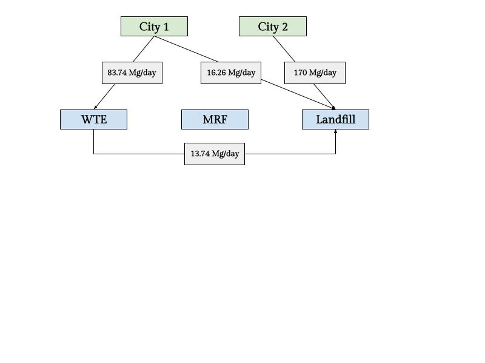

Before tackling individual components, the given information has been entered in Julia for reference:
#Facility Information facilities = ["WTE", "MRF", "LF"]; #facility types capacities = [150, 350, 200]; #Mg/day costs_fixed = [2500, 1500, 2000]; #dollars/day tipping_fees = [60, 7, 50]; #dollars/Mg costs_recycling = [0, 45, 0]; #dollars/Mg recycled #Relative Distances distance_city1 = [15, 5, 30]; #km distance_city2 = [10, 15, 25]; #km distance_WTE = [0, 15, 18]; #km distance_MRF = [15, 0, 32]; #km distance_LF = [18, 32, 0]; #km #Transportation Costs cost_transport = 1.5; #dollars/Mg/km #Waste Production solid_waste = [100, 170]; #Mg/day #Waste Composition and Properties components = ["Food","Paper","Plastic","Textile","Rubber","Wood","Yard","Glass","Fe","Al","Metal","Misc"]; mass_percent = [0.15, 0.40, 0.05, 0.03, 0.02, 0.05, 0.18, 0.04, 0.02, 0.02, 0.01, 0.03]; ash_percent = [0.08, 0.07, 0.05, 0.10, 0.15, 0.02, 0.02, 1, 1, 1, 1, 0.70]; rec_percent = [0, 0.55, 0.15, 0.10, 0, 0.30, 0.40, 0.60, 0.75, 0.80, 0.50, 0];
The following Julia code calculates the overall recycling and ash fractions for the waste produced by each city:
rec_frac = mass_percent'*rec_percent; ash_frac_dir = mass_percent'*ash_percent; mass_percent_postMRF = (ones(12)-rec_percent).*mass_percent; #composition of non-recycled waste mass_percent_postMRF = mass_percent_postMRF / sum(mass_percent_postMRF); #normalized composition of non-recycled waste ash_frac_mrf = mass_percent_postMRF'*ash_percent;
This gives us a recycling rate of 37.75% and an ash fractions of 16.41% and 13.86% for waste sent directly to WTE and waste sent from the MRF to WTE respectively.
The decision variables for this optimization problem are:
Waste transported from city i to disposal j in Mg/day, $W_{ij}$
Residual waste transported from disposal k to disposal j in Mg/day, $R_{kj}$
Operational status of disposal j (a binary variable), $Y_j$
The objective function will be to minimize the sum of disposal costs and transportation costs:
\[ Cost = \sum_i\sum_j a_{ij}l_{ij}W_{ij} + \sum_j[c_jY_j+\sum_ib_jW_{ij}] \]
where $a_{ij}$ is the cost of transporting waste from source i to disposal j in dollars/Mg-km, $l_{ij}$ is the distance between sources i and disposal j in km, $c_j$ is the fixed cost of operating disposal j in dollars/day, and $b_j$ is the variable cost of disposing waste at disposal j in dollars/Mg.
For the specifics of this problem, this translates to:
Waste-to-Energy: $2500Y_1 + 60(W_{11}+W_{21}+R_{21})$
Material Recovery: $1500Y_2 + 7(W_{12}+W_{22})+0.3775(45)(W_{12}+W_{22})$
Landfill: $2000Y_3 + 50(W_{13}+W_{23}+R_{13}+R_{23})$
Transportation: $1.5[15W_{11}+5W_{12}+30W_{13}+10W_{21}+15W_{22}+25W_{23}+18R_{13}+15R_{21}+32R_{23}]$
Then the total cost is: $2500Y_1 + 1500Y_2 + 2000Y_3 + 82.5W_{11} + 31.4875W_{12} + 95W_{13} + 75W_{21} + 46.4875W_{22} + 87.5W_{23} + 77R_{13} + 82.5R_{21} + 98R_{23}$
Constraints can be organized into city mass balance, capacity mass balance, recycling rate and residual ash constraints, and committment and nonnegativity constraints.
City Mass Balance Constraints: The sum of waste sent to each facility must equal the waste produced by each city.
City 1: $W_{11}+W_{12}+W_{13}=100$
City 2: $W_{21}+W_{22}+W_{23}=170$
Capacity Mass Balance Constraints: The total weights sent to each facility must not exceed their capacities.
WTE: $W_{11}+W_{21}+R_{21} \leq 150$
MRF: $W_{12}+W_{22} \leq 350$
LF: $W_{13}+W_{23}+R_{23}+R_{13} \leq 200$
Recycling Rate and Residual Ash Constraints: The waste sent from the WTE must be equal to the ash weight produced, and the weight sent from the MRF must be the non-recycled waste that entered the facility.
Residual Ash: $R_{13} = 0.1641(W_{11}+W_{21})+0.1386R_{21})$
Recycling Rate: $R_{21}+R_{23}=(1-0.3775)(W_{12}+W_{22})$
Commitment and Non-Negativity: Defining the binary variables and making all waste streams nonnegative
If $W_{11}+W_{21}+R_{21}=0$, $Y_1=0$, else $Y_1=1$
If $W_{21}+W_{22}=0$, $Y_1=0$, else $Y_1=1$
The landfill must be on: $Y_3=1$
Nonnegativity: $W_{ij},R_{ij} \geq 0$
using JuMP; using Cbc; waste = Model(Cbc.Optimizer); I = 1:2; #number of cities J = 1:3; #number of disposal sites @variable(waste, W[i in I, j in J] >= 0); @variable(waste, R[k in J, j in J] >= 0); @variable(waste, Y[j in J], Bin); @objective(waste, Min, sum([82.5 31.4875 95; 75 46.4875 87.5].*W)+sum([0 0 77; 82.5 0 98; 0 0 0].*R) + sum(costs_fixed .* Y)); # mass-balance @constraint(waste, city[i in I], sum(W[i,:]) == solid_waste[i]); @constraint(waste, wte, W[1,1] + W[2,1] + R[2,1] <= capacities[1]); @constraint(waste, mrf, W[1,2] + W[2,2] <= capacities[2]); @constraint(waste, lf, W[1,3] + W[2,3] + R[2,3] + R[1,3] <= capacities[3]); # residuals @constraint(waste, resid1, R[1,3] == ash_frac_dir .* (W[1,1] + W[2,1]) + ash_frac_mrf .* R[2,1]); @constraint(waste, resid2, R[2,1] + R[2,3] == (1-rec_frac) .* (W[1,2] + W[2,2])); @constraint(waste, resid3, sum(R[3,:]) == 0); @constraint(waste, noresiddiag, sum(R[i, i] for i in I) == 0); @constraint(waste, noresid, R[1,2] == 0); # commitment @constraint(waste, commit1, !Y[1] => {W[1,1] + W[2,1] + R[2,1] == 0}); @constraint(waste, commit2, !Y[2] => {W[1,2] + W[2,2] == 0}); @constraint(waste, commit3, Y[3] == 1); optimize!(waste);Welcome to the CBC MILP Solver Version: 2.10.5 Build Date: Dec 4 2021 command line - Cbc_C_Interface -solve -quit (default strategy 1) Continuous objective value is 29604.6 - 0.00 seconds Cgl0003I 0 fixed, 0 tightened bounds, 0 strengthened rows, 2 substitutions Cgl0003I 0 fixed, 0 tightened bounds, 0 strengthened rows, 2 substitutions Cgl0003I 0 fixed, 0 tightened bounds, 0 strengthened rows, 2 substitutions Cgl0003I 0 fixed, 0 tightened bounds, 0 strengthened rows, 2 substitutions Cgl0003I 0 fixed, 0 tightened bounds, 0 strengthened rows, 2 substitutions Cgl0003I 0 fixed, 0 tightened bounds, 0 strengthened rows, 2 substitutions Cgl0003I 0 fixed, 0 tightened bounds, 0 strengthened rows, 2 substitutions Cgl0003I 0 fixed, 0 tightened bounds, 0 strengthened rows, 2 substitutions Cgl0003I 0 fixed, 0 tightened bounds, 0 strengthened rows, 2 substitutions Cgl0004I processed model has 11 rows, 14 columns (4 integer (4 of which binary)) and 34 elements Cbc0036I Heuristics switched off as 2 branching objects are of wrong type Cbc0013I At root node, 0 cuts changed objective from 29604.592 to 29604.592 in 1 passes Cbc0014I Cut generator 0 (Probing) - 0 row cuts average 0.0 elements, 0 column cuts (0 active) in 0.000 seconds - new frequency is -100 Cbc0014I Cut generator 1 (Gomory) - 0 row cuts average 0.0 elements, 0 column cuts (0 active) in 0.000 seconds - new frequency is -100 Cbc0014I Cut generator 2 (Knapsack) - 0 row cuts average 0.0 elements, 0 column cuts (0 active) in 0.000 seconds - new frequency is -100 Cbc0014I Cut generator 3 (Clique) - 0 row cuts average 0.0 elements, 0 column cuts (0 active) in 0.000 seconds - new frequency is -100 Cbc0014I Cut generator 4 (MixedIntegerRounding2) - 0 row cuts average 0.0 elements, 0 column cuts (0 active) in 0.000 seconds - new frequency is -100 Cbc0014I Cut generator 5 (FlowCover) - 0 row cuts average 0.0 elements, 0 column cuts (0 active) in 0.000 seconds - new frequency is -100 Cbc0010I After 0 nodes, 1 on tree, 1e+50 best solution, best possible 29604.592 (0.00 seconds) Cbc0016I Integer solution of 33263.108 found by strong branching after 2 iterations and 1 nodes (0.00 seconds) Cbc0016I Integer solution of 33126.954 found by strong branching after 2 iterations and 2 nodes (0.00 seconds) Cbc0001I Search completed - best objective 33126.95364238411, took 2 iterations and 2 nodes (0.00 seconds) Cbc0032I Strong branching done 8 times (7 iterations), fathomed 2 nodes and fixed 0 variables Cbc0035I Maximum depth 0, 1 variables fixed on reduced cost Cuts at root node changed objective from 29604.6 to 29604.6 Probing was tried 1 times and created 0 cuts of which 0 were active after adding rounds of cuts (0.000 seconds) Gomory was tried 1 times and created 0 cuts of which 0 were active after adding rounds of cuts (0.000 seconds) Knapsack was tried 1 times and created 0 cuts of which 0 were active after adding rounds of cuts (0.000 seconds) Clique was tried 1 times and created 0 cuts of which 0 were active after adding rounds of cuts (0.000 seconds) MixedIntegerRounding2 was tried 1 times and created 0 cuts of which 0 were active after adding rounds of cuts (0.000 seconds) FlowCover was tried 1 times and created 0 cuts of which 0 were active after adding rounds of cuts (0.000 seconds) TwoMirCuts was tried 1 times and created 0 cuts of which 0 were active after adding rounds of cuts (0.000 seconds) ZeroHalf was tried 1 times and created 0 cuts of which 0 were active after adding rounds of cuts (0.000 seconds) 9 bounds tightened after postprocessing Result - Optimal solution found Objective value: 33126.95364238 Enumerated nodes: 2 Total iterations: 2 Time (CPU seconds): 0.01 Time (Wallclock seconds): 0.00 Total time (CPU seconds): 0.01 (Wallclock seconds): 0.00
The following code in Julia determines the requested values.
min_cost = objective_value(waste); commitments = value.(Y); waste_values = value.(W); residual_values = value.(R);
The objective value is 28,886.36 dollars, and the MRF facility will not be used in this scenario. The following diagram depicts the waste flows from the cities to the facilities. 
Only the objective function will be altered. In particular,
Waste-to-Energy: $2500Y_1 + 75(W_{11}+W_{21}+R_{21})$
Material Recovery: $1500Y_2 + 7(W_{12}+W_{22})+0.3775(45)(W_{12}+W_{22})$
Landfill: $2000Y_3 + 50(W_{13}+W_{23}+R_{13}+R_{23})$
Transportation: $2[15W_{11}+5W_{12}+30W_{13}+10W_{21}+15W_{22}+25W_{23}+18R_{13}+15R_{21}+32R_{23}]$
Then the total cost is: $2500Y_1 + 1500Y_2 + 2000Y_3 + 105W_{11} + 33.9875W_{12} + 110W_{13} + 95W_{21} + 53.9875W_{22} + 100W_{23} + 86R_{13} + 105R_{21} + 114R_{23}$
using JuMP; using Cbc; waste_alt = Model(Cbc.Optimizer); @variable(waste_alt, W_alt[i in I, j in J] >= 0); @variable(waste_alt, R_alt[k in J, j in J] >= 0); @variable(waste_alt, Y_alt[j in J], Bin); @objective(waste_alt, Min, sum([105 33.9875 110; 95 53.9875 100].*W_alt)+sum([0 0 86; 105 0 114; 0 0 0].*R_alt) + sum(costs_fixed .* Y_alt)); # mass-balance @constraint(waste_alt, city_alt[i in I], sum(W_alt[i,:]) == solid_waste[i]); @constraint(waste_alt, wte_alt, W_alt[1,1] + W_alt[2,1] + R_alt[2,1] <= capacities[1]); @constraint(waste_alt, mrf_alt, W_alt[1,2] + W_alt[2,2] <= capacities[2]); @constraint(waste_alt, lf_alt, W_alt[1,3] + W_alt[2,3] + R_alt[2,3] + R_alt[1,3] <= capacities[3]); # residuals @constraint(waste_alt, resid1_alt, R_alt[1,3] == ash_frac_dir .* (W_alt[1,1] + W_alt[2,1]) + ash_frac_mrf .* R_alt[2,1]); @constraint(waste_alt, resid2_alt, R_alt[2,1] + R_alt[2,3] == (1-rec_frac) .* (W_alt[1,2] + W_alt[2,2])); @constraint(waste_alt, resid3_alt, sum(R_alt[3,:]) == 0); @constraint(waste_alt, noresiddiag_alt, sum(R_alt[i, i] for i in I) == 0); @constraint(waste_alt, noresid_alt, R_alt[1,2] == 0); # commitment @constraint(waste_alt, commit1_alt, !Y_alt[1] => {W_alt[1,1] + W_alt[2,1] + R_alt[2,1] == 0}); @constraint(waste_alt, commit2_alt, !Y_alt[2] => {W_alt[1,2] + W_alt[2,2] == 0}); @constraint(waste_alt, commit3_alt, Y_alt[3] == 1); optimize!(waste_alt);Welcome to the CBC MILP Solver Version: 2.10.5 Build Date: Dec 4 2021 command line - Cbc_C_Interface -solve -quit (default strategy 1) Continuous objective value is 25823.8 - 0.00 seconds Cgl0003I 0 fixed, 0 tightened bounds, 0 strengthened rows, 2 substitutions Cgl0003I 0 fixed, 0 tightened bounds, 0 strengthened rows, 2 substitutions Cgl0003I 0 fixed, 0 tightened bounds, 0 strengthened rows, 2 substitutions Cgl0003I 0 fixed, 0 tightened bounds, 0 strengthened rows, 2 substitutions Cgl0003I 0 fixed, 0 tightened bounds, 0 strengthened rows, 2 substitutions Cgl0003I 0 fixed, 0 tightened bounds, 0 strengthened rows, 2 substitutions Cgl0003I 0 fixed, 0 tightened bounds, 0 strengthened rows, 2 substitutions Cgl0003I 0 fixed, 0 tightened bounds, 0 strengthened rows, 2 substitutions Cgl0003I 0 fixed, 0 tightened bounds, 0 strengthened rows, 2 substitutions Cgl0004I processed model has 11 rows, 14 columns (4 integer (4 of which binary)) and 34 elements Cbc0036I Heuristics switched off as 2 branching objects are of wrong type Cbc0013I At root node, 0 cuts changed objective from 25823.769 to 25823.769 in 1 passes Cbc0014I Cut generator 0 (Probing) - 0 row cuts average 0.0 elements, 0 column cuts (0 active) in 0.000 seconds - new frequency is -100 Cbc0014I Cut generator 1 (Gomory) - 0 row cuts average 0.0 elements, 0 column cuts (0 active) in 0.000 seconds - new frequency is -100 Cbc0014I Cut generator 2 (Knapsack) - 0 row cuts average 0.0 elements, 0 column cuts (0 active) in 0.000 seconds - new frequency is -100 Cbc0014I Cut generator 3 (Clique) - 0 row cuts average 0.0 elements, 0 column cuts (0 active) in 0.000 seconds - new frequency is -100 Cbc0014I Cut generator 4 (MixedIntegerRounding2) - 0 row cuts average 0.0 elements, 0 column cuts (0 active) in 0.000 seconds - new frequency is -100 Cbc0014I Cut generator 5 (FlowCover) - 0 row cuts average 0.0 elements, 0 column cuts (0 active) in 0.000 seconds - new frequency is -100 Cbc0010I After 0 nodes, 1 on tree, 1e+50 best solution, best possible 25823.769 (0.00 seconds) Cbc0016I Integer solution of 28886.364 found by strong branching after 2 iterations and 1 nodes (0.00 seconds) Cbc0001I Search completed - best objective 28886.36379949755, took 2 iterations and 2 nodes (0.00 seconds) Cbc0032I Strong branching done 8 times (9 iterations), fathomed 2 nodes and fixed 0 variables Cbc0035I Maximum depth 0, 1 variables fixed on reduced cost Cuts at root node changed objective from 25823.8 to 25823.8 Probing was tried 1 times and created 0 cuts of which 0 were active after adding rounds of cuts (0.000 seconds) Gomory was tried 1 times and created 0 cuts of which 0 were active after adding rounds of cuts (0.000 seconds) Knapsack was tried 1 times and created 0 cuts of which 0 were active after adding rounds of cuts (0.000 seconds) Clique was tried 1 times and created 0 cuts of which 0 were active after adding rounds of cuts (0.000 seconds) MixedIntegerRounding2 was tried 1 times and created 0 cuts of which 0 were active after adding rounds of cuts (0.000 seconds) FlowCover was tried 1 times and created 0 cuts of which 0 were active after adding rounds of cuts (0.000 seconds) TwoMirCuts was tried 1 times and created 0 cuts of which 0 were active after adding rounds of cuts (0.000 seconds) ZeroHalf was tried 1 times and created 0 cuts of which 0 were active after adding rounds of cuts (0.000 seconds) 9 bounds tightened after postprocessing Result - Optimal solution found Objective value: 28886.36379950 Enumerated nodes: 2 Total iterations: 2 Time (CPU seconds): 0.01 Time (Wallclock seconds): 0.00 Total time (CPU seconds): 0.01 (Wallclock seconds): 0.00
The following code in Julia determines the requested values.
min_cost_alt = objective_value(waste_alt); commitments_alt = value.(Y_alt); waste_values_alt = value.(W_alt); residual_values_alt = value.(R_alt);
The objective value is 33,126.95 dollars, and the WTE facility is not used (in contrast to the MRF facility from last time). The following diagram depicts the waste flows from the cities to the facilities.
Optimization Setup: Mixed Integer Programming and Waste Management Lecture (10/17)